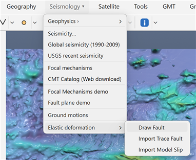
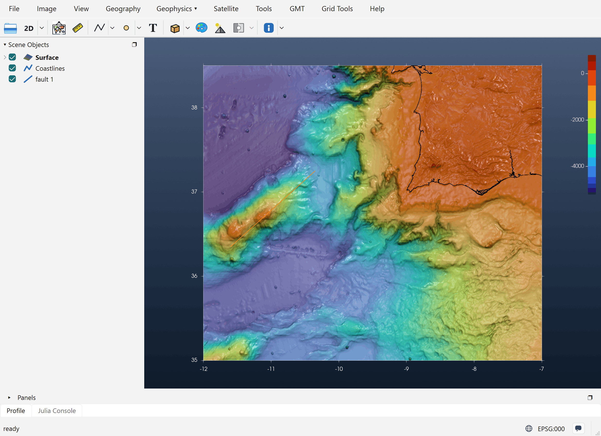
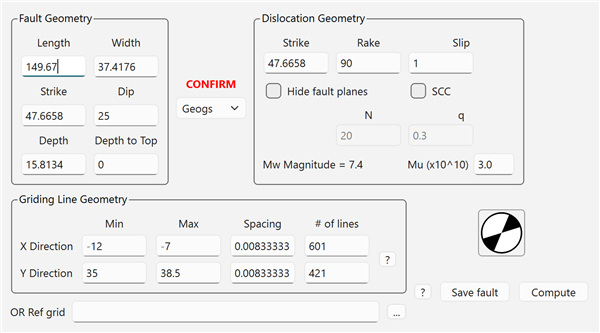
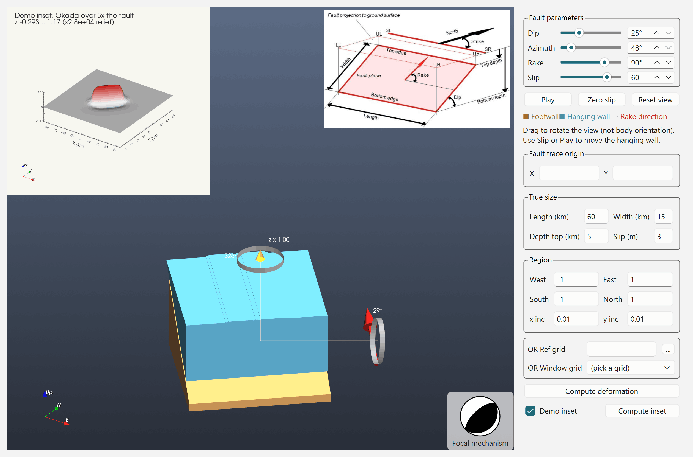
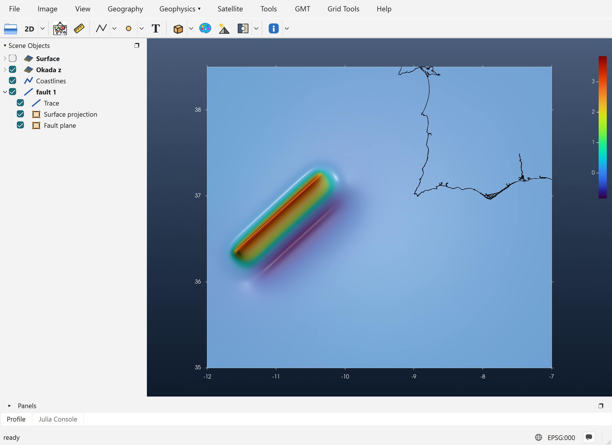
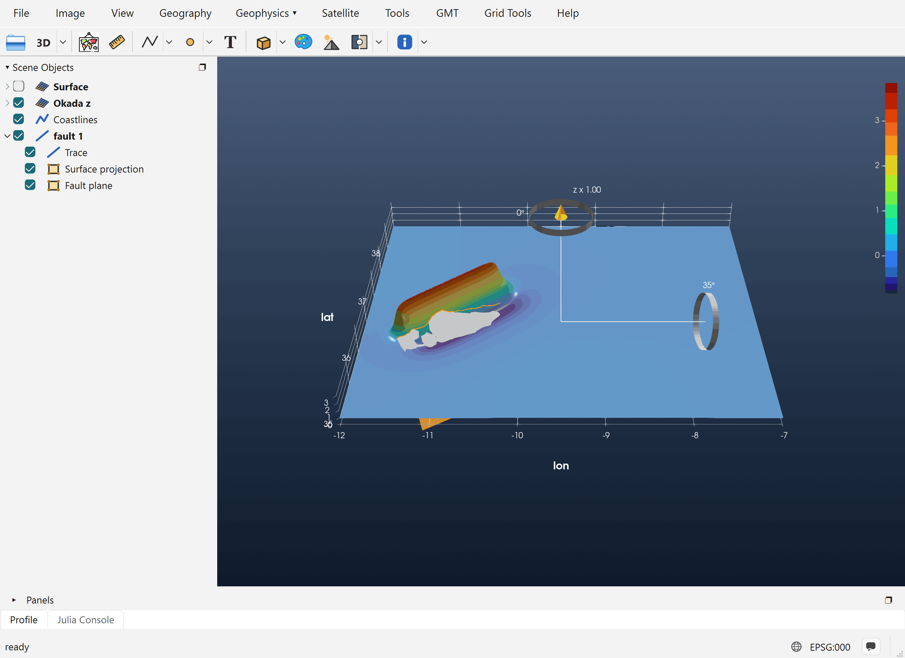

Tutorial: Elastic Deformation
This tutorial computes the vertical seafloor or ground displacement produced by slip on a rectangular fault, using Okada's (1985) solution for a dislocation in an elastic half-space. The result is a new grid, Okada z, that can be viewed in 2-D or 3-D and used, for example, as the initial condition of a tsunami model.
The example below uses a thrust fault along the Gorringe Bank, SW of Portugal, but any place works.
1. Load a grid or image in geographic coordinates
The deformation is computed on a grid: the grid (or image) in the window supplies the region, the node spacing and the coordinate system. So start by opening one, with File → Open or by dragging a file onto the window. Coordinates must be geographic (longitude/latitude in degrees). Fault lengths and widths are then entered in kilometres.
Here the grid is @earth_relief_30s cut to -12/-7/35/38.5, a 601 × 421 grid at 30 arc-seconds.
2. Open Seismology → Elastic deformation

The submenu has three entries:
- Draw Fault: draw a fault trace by hand. This is what this tutorial uses.
- Import Trace Fault: read fault traces from a sub-fault-format file. The file gives each fault its strike, dip, width, depth, rake and slip, and the dipping plane is drawn right away.
- Import Model Slip: read a whole finite-fault slip model (many rectangular sub-faults), shown as patches coloured by slip. Its elastic-deformation dialog gets extra Segments and Faults selectors, and Compute uses every sub-fault in the model.
3. Draw the fault trace
Pick Draw Fault, click the start point of the fault, then click its end point (a double-click ends the line). The trace becomes a fault 1 row in Scene Objects.

The line marks the top edge of the fault plane, projected to the surface. Which end is the first point matters. Strike is measured from the first point to the last, and the plane dips to the right of the strike direction. Here the line runs from SW to NE (strike ≈ 48°), so the plane dips to the SE.
Right-click the fault, either the line itself or its row in Scene Objects. Two entries come first in the menu:
- Vertical elastic deformation: the full Okada dialog, described in step 4.
- Show in Fault plane: a 3-D model of the fault that shows how dip, azimuth and rake work. See step 5.
4. The Vertical elastic deformation dialog

The dialog opens already filled in from the trace. Length and Strike are measured on the line. Width starts at Length/4, and Depth is derived from the other values. Griding Line Geometry is copied from the window's grid.
Fault Geometry
| Field | Meaning | Effect on the deformation |
|---|---|---|
| Length (km) | Along-strike length of the fault | The length of the deformed zone. Editing it moves the end of the trace on the map. |
| Width (km) | Down-dip width of the plane | A wider fault moves more rock, and the uplift spreads farther down-dip. |
| Strike (°) | Azimuth of the trace, clockwise from North | Rotates the whole pattern. Editing it swings the trace around its first point. |
| Dip (°) | Angle of the plane below horizontal | A shallow thrust gives a broad uplift with a shallow trough behind it. A steep one gives a narrower, more symmetric uplift and trough. |
| Depth (km) | Depth of the bottom edge | Read-only in practice: always recomputed as Depth to Top + Width · sin(Dip). |
| Depth to Top (km) | Depth of the top edge below the surface | 0 means the fault breaks the surface, which gives a sharp step at the trace. Deeper faults give a smaller, smoother and wider signal. |
The gray patch drawn beside the trace is the plane's projection onto the surface. In 3-D view, the buried dipping plane itself is also drawn. Both follow the Width, Dip and Strike fields as you type.
Dislocation Geometry
| Field | Meaning | Effect on the deformation |
|---|---|---|
| Strike | The dislocation strike. It stays equal to the fault strike. | See above. |
| Rake (°) | Direction of slip on the plane (Aki & Richards convention) | 90: thrust. The hanging wall goes up, giving uplift above the fault and a smaller trough farther down-dip. −90: normal fault, the same pattern with the sign reversed. 0 / 180: strike-slip, which moves the ground mostly sideways and gives only a small four-lobed vertical pattern. Values in between mix the two. |
| Slip (m) | Amount of slip on the plane | The field is linear in slip: doubling slip doubles every value. |
| Mu (×10¹⁰ Pa) | Shear modulus (rigidity) | Used only for the magnitude, not for the displacement. |
| Mw Magnitude | Updates as you type | M₀ = μ · L · W · slip, Mw = ⅔ log₁₀ M₀ − 6.07. |
Hide fault planes, SCC, N and q are carried over from Mirone's dialog. The current computation does not use them.
The beachball shows the focal mechanism for the current Strike, Dip and Rake. Click it to open Focal Meca Studio with the same values.
CONFIRM sets the coordinate type: Geogs for longitude/latitude, Cart for Cartesian. It is chosen automatically from the grid. Check it before computing.
Where the deformation is computed
Griding Line Geometry shows the region, spacing and size of the window's grid. When the window has a grid, the deformation is always computed on that grid's own nodes: same size, same registration, same coordinates. The result can then be added to the bathymetry node by node.
Buttons
- Compute runs Okada and adds the result to the window (step 6).
- Save fault writes the fault in sub-fault format. Import Trace Fault can read it back.
For this example the dialog values were changed to Depth to Top = 5 km and Slip = 8 m, with rake 90° (a thrust) and dip 25°.
5. Alternative: Show in Fault plane
Show in Fault plane opens the Fault plane demo, a 3-D block model of the fault that helps you picture the parameters before computing anything.

When it is opened from a drawn trace, the demo is filled in from that trace:
- Azimuth is set to the trace's strike.
- True size → Length is the trace length, and Width starts at Length/4, the same rule the elastic dialog uses.
- Fault trace origin X/Y is the trace's first point, so the computed deformation lands exactly where you drew the line.
- Region is taken from the window's grid.
(The screenshot above shows the demo opened on its own from Seismology → Fault plane demo, so it still has the default values.)
The controls:
- Dip, Azimuth, Rake (sliders) turn and tilt the model. The Footwall is drawn in brown and the Hanging wall in blue. The red arrow shows the rake direction, and the beachball follows the mechanism.
- Slip (slider) moves the hanging wall along the rake so you can watch the motion. This slider only animates the model: ±100 corresponds to ±30 % of the block length. Play animates it, Zero slip puts the block back, and Reset view resets the camera.
- True size (Length, Width, Depth top, Slip in m) holds the fault's real dimensions. Only the Okada computation uses them. The block model stays the same size whatever you type.
- Region / OR Ref grid / OR Window grid set where the deformation is computed.
- Compute deformation computes the Okada field for the true size and puts it into the window the demo was opened from, the same way the elastic dialog's Compute does.
- Demo inset / Compute inset show a small preview in the top-left corner: the Okada field over a zone three times the size of the fault, centred on it. Nothing is added to the main window.
Try moving Rake from 90° to −90° and pressing Compute inset: the uplift becomes subsidence. Then set Dip to 60° and compare how narrow the pattern gets.
6. The result in 2-D
After Compute, a new grid named Okada z appears in Scene Objects. Its values are vertical displacement in metres. The new grid is checked (visible), the source grid is unchecked, and the axes and colour bar are set to the new grid's own values.

For this 8 m thrust the maximum uplift is about 3.7 m, at the trace. The uplift decreases toward the SE, over the buried plane. Farther down-dip there is a trough of about −0.9 m, and the footwall side (NW) barely moves. The fault 1 group now has three rows: the Trace, its Surface projection and the buried Fault plane.
7. The result in 3-D
Switch the 2D toolbar button to 3D and rotate the view with the mouse or the gizmo. The vertical-exaggeration handle (z × …) makes small displacements easier to see.

The ridge of uplift along the fault and the trough behind it are now visible in relief. The buried fault plane lies under the surface. Uncheck Surface projection in Scene Objects if the gray patch hides the deformation.
Next steps
- To model a tsunami, add Okada z to the bathymetry, or pass it to NSWING as the initial condition. It is on exactly the same nodes as the grid it was computed from, so the two add node by node.
- Use Save fault to keep the fault, and Import Trace Fault to load it again later.
- For a real earthquake, use Import Model Slip to compute the deformation from a published finite-fault model.